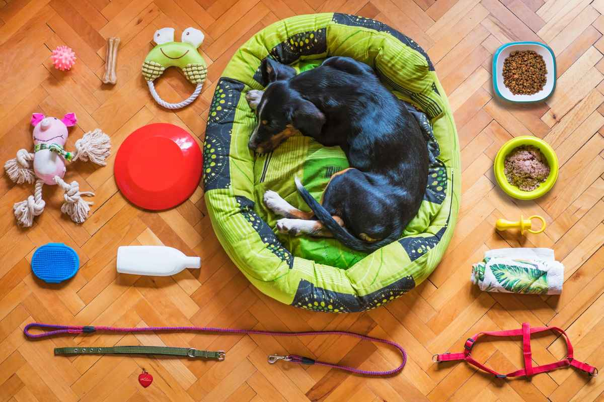

Old pet gear is easier to clear than it looks. Empty and drain aquariums first, rehome any fish or plants rather than dumping them, take batteries out of electronic feeders and collars, and ask your local shelter what supplies they need. A crew can carry the crates, cat trees, dog houses and tank stands out together.
Pet gear has a way of staying put. The puppy crate turned into the big-dog crate, then a second one for the car. The cat tree went from the corner of the living room to the garage when it got shabby. There is a dog house in the side yard nobody has used in years, a tank on a stand in the back bedroom, and a bin of leashes, bowls and beds that never quite went anywhere.
Why pet gear sticks around so long
Most of it is too big to toss in the cart and too specific to be useful for anything else. A wire crate does not fit in a trash bin. A carpeted cat tree is not something a neighbor needs. A dog house in the yard is heavy, usually a little rotten at the base, and not in anyone's way enough to deal with.
Some of it stays because of what it means. If the pet that used it has died, the crate in the corner can be the hardest thing in the house to move. There is no right timeline for that. When you are ready, a crew can come take it out of the room so you do not have to carry it yourself, and nothing about the visit needs to be explained.
If you are sorting because the household is changing, a new pet that needs different gear, a move to a place with no yard, or a family member who can no longer keep an animal, the sort runs the same way.
Aquariums, tanks and the stand they sit on
This is the one item that needs real prep before a pickup.
Rehome what lives in it first. Fish, snails and aquarium plants should never be emptied into a creek, a pond or a storm drain. The Texas Invasives program, run with Texas Parks and Wildlife, makes the case on its Never Dump Your Tank page: aquarium species are usually not native to Texas and can do real damage to local water. It suggests giving fish to a friend with a tank or the store you bought them from, and notes that plants can go out with the trash.
Drain it completely. We carry tanks out empty. Water, gravel and decor need to come out first, both because a full tank is far too heavy to move safely and because water sloshing through a hallway is how floors get damaged.
Unplug the equipment. Heaters, filters, pumps, air pumps and lights are small electronics. The EPA's guide to electronics donation and recycling recommends passing working pieces on and recycling the rest. They can go on our truck with the tank.
Leftover water treatments and medications stay off the truck. Bottles of tank chemicals, flea and tick treatments, and pesticide sprays for the yard go to household chemical collection. Plano's household chemical collection program is one example, and we will point you to your city's.
Check every bed, crate pad and toy bin before it goes. Collars with tags, a favorite toy, and paperwork like vet records and microchip numbers end up tucked inside crates and under bedding. Look through each piece once before it is set out for us.
Can old pet supplies be donated
Sometimes, if they are clean and in good shape. Animal shelters and rescues often need crates, carriers, leashes and unopened food, but each one keeps its own list and some cannot accept used bedding or anything soft. Check with your city's shelter, such as Plano Animal Services, before you load the car.
What usually has a chance: wire and plastic crates with every panel and the tray, hard carriers with working latches, clean metal bowls, and unopened food and treats. What usually does not: cat trees with worn or stained carpet, chewed beds, scratched-up litter boxes, and anything that smells like the animal that used it.
Our guide to donating furniture in DFW covers how donation centers tend to decide, and it applies here too. If you would not bring it home for your own animal, a shelter probably cannot use it either.
Electronic gear has batteries. Automatic feeders, water fountains, training collars and GPS trackers often still have batteries inside. The EPA's page on used household batteries notes that batteries can start fires even when they seem dead. Take them out and drop them at your city's program.
What we haul from a pet cleanout
On a typical pet gear pickup, we take:
- wire and plastic crates, folded or whole, and the trays
- cat trees, scratching posts and carpeted condos
- dog houses, wood or plastic, once they are emptied out
- kennel and dog run panels, and the gates and pens from puppy years
- empty aquariums, tank stands and the cabinet hoods that sit on them
- pet beds, carriers, playpens and the bin of bowls and leashes
- chicken coops, rabbit hutches and the wire runs attached to them
The outdoor pieces are often the heavier half of the job. A wood dog house or a coop has usually sat on the ground for years, and it comes out the same way a small shed does. Our post on what is usually inside an old shed covers that kind of backyard clearing, and our guide to barn and outbuilding cleanouts on acreage covers coops and runs on bigger lots.
Inside, the cat tree and crates usually leave along with whatever else is crowding the room. Our closet cleanout guide covers the beds and soft goods, and our garage cleanout checklist covers the shelf where the extra crates ended up. If you are not sure whether something will go on the truck, our list of what junk removal will and will not take answers most of it.
We run these pickups across the area, from a backyard dog run cleared out in Carrollton to a tank stand and cabinet carried out of a Dallas apartment.
Where it goes after we load it: usable items go to local donation partners, metal goes to recyclers, and our stated goal is to keep more than half of every load out of the landfill.
How the pickup runs
Send us a photo of what is going and where it is: the corner of a room, the garage, the side yard. Tell us if there is a tank upstairs or a dog house behind a gate, so the crew plans the route out.
A crew looks at what you have and gives you a firm number before anything is loaded. The quote is the bill, and disposal is included. We are affordable and priced fair, based on how much there is to take. You point, we carry, we sweep. These are our own crews, not gig labor.
Call before noon and same afternoon is typical across the northern suburbs. When the gear is sorted, tell us what needs to go, or read more about how our furniture removal works for the bigger pieces.
Frequently asked questions
Do you take old aquariums?
Yes, once they are empty. Rehome the fish and plants, drain the water, and take out the gravel. We carry out the tank, the stand and the equipment together.
Will you haul a dog house or a chicken coop from the backyard?
Yes. Empty it out first and tell us where it sits and whether a gate is involved, so the crew knows the path to the truck.
Can I donate a used dog crate?
Often, if it is clean and has every panel and the tray. Call your local shelter or rescue first, since each one keeps its own list of what it can take.
What do I do with flea treatments and aquarium chemicals?
Those go to your city's household chemical collection program, not on our truck. We will point you to the right one.
Do you take cat trees and scratching posts?
Yes, any size, carpeted or not. They come out with the rest of the load.
The gear that still gets used is worth the floor space. The rest can go whenever you are ready.